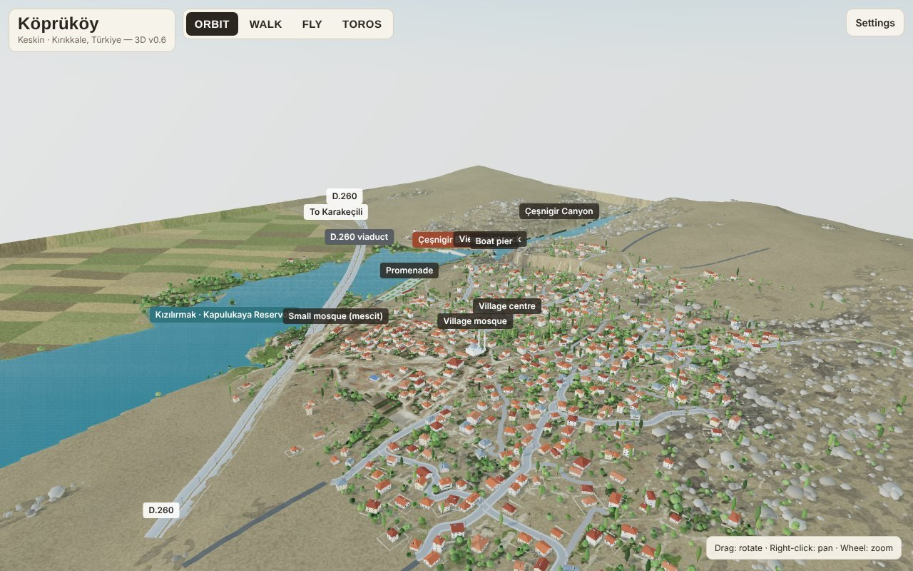
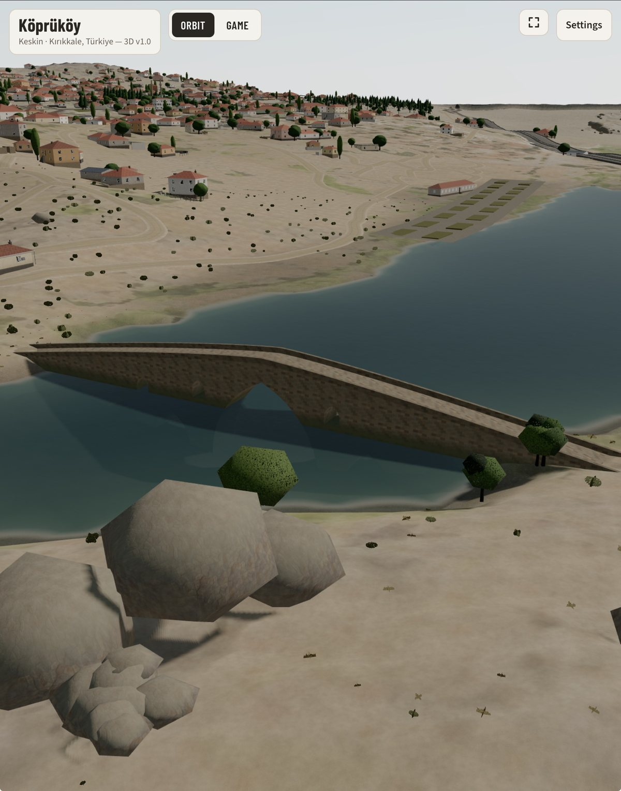

Köprüköy in 3D
A small town rebuilt in the browser from elevation data, satellite imagery and street-level photos, around the 13th-century Çeşnigir Bridge.
- Role
- Idea, references and checks, built with Claude
- Runs
- In any modern browser, phone or desktop
- Output
- An interactive 3D model
- Status
- Prototype, improving step by step

01 · Problem
What need does it solve?
I wanted a way to explore a small town that matters to my family from anywhere, as it really looks, not as a flat map.
Ready-made 3D maps do not cover a place this small in any detail, so the model had to be built from public data.
02 · Solution
How it works
The model is built from real measurements and checked against real photos:
- Terrain from SRTM elevation data, with the reservoir at its true level
- Roads and building footprints traced from the map layer and 0.3 m satellite imagery, all georeferenced on the bridge
- Houses, trees, the school, fountains and walls checked frame by frame against Street View panoramas
- The Çeşnigir Bridge modelled from its real dimensions: 110 m long with 12 arches
- Map-style touch navigation, plus Walk, Fly and a game mode



03 · Architecture
How the system fits together
Public data sources are turned into clean layout data by small Python tools that trace roads, building footprints and roofs and align everything to one reference point. The browser loads that data and builds the scene with Three.js. The scene is cut into map tiles so a phone only draws what the camera can see.
04 · Technology
What it is built with
| Rendering | Three.js (WebGL) with physically based materials |
|---|---|
| Data | SRTM elevation, satellite imagery, map layer, Street View panoramas |
| Tools | Python scripts for tracing roads, footprints and roofs |
| Model | Blender, exported as glTF |
| Hosting | GitHub Pages, no build step |
05 · Challenges
Hard parts and how they were solved
Accuracy from public data
Roads and houses are traced from satellite and map layers, then corrected against street-level photos, one part of the village at a time.
Smooth on a phone
About two million triangles are split into tiles so off-screen parts are skipped, small details fade with distance and resolution adjusts to keep the frame rate up.
Feedback from people who know the place
Corrections from people who know the town are fed back into the layout, building by building.
06 · Results
What came out of it
- A live model of the town and the bridge that runs in the browser, on phones too.
- Navigation that works like a map app, with walk and fly modes for a closer look.
- A data pipeline that makes each new correction quick to apply.